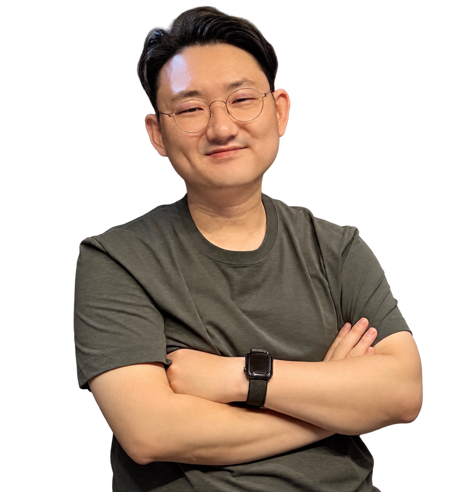
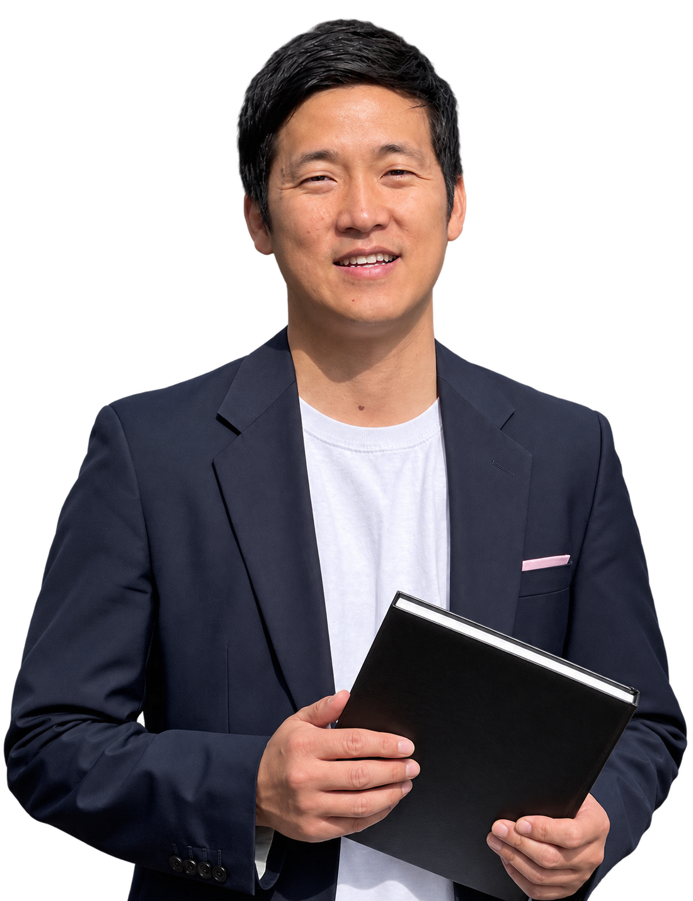
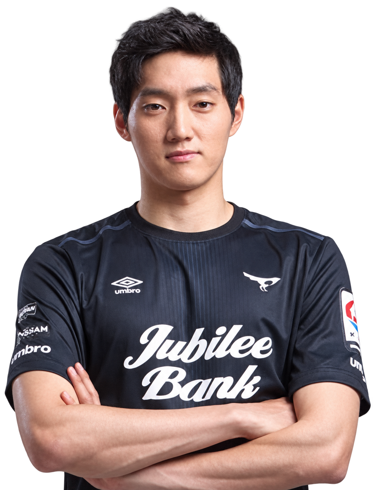

부모도 지도자도, 변화를 판단할 근거가 필요합니다
“왜 우리 아이만 작을까요?”, “훈련을 늘려도 될까요?”, “실수 뒤에는 어떻게 격려할까요?” 성장·몸·마음의 고민을 하나의 기록으로 연결합니다.
11명의 선수, 11가지 성장속도
바이오밴딩을 기반으로 성장단계에 맞춰 멘탈과 피지컬을 함께 읽습니다
11명의 선수, 11가지 성장속도
성장단계에 맞춰 멘탈과 피지컬을 함께 읽는
바이오밴딩 기반 선수 분석, MPS


사용 중인 팀과 선수
MPS가 쌓아온 선수 데이터를 바탕으로,
아이의 성장단계와 이전 기록을 함께 살핍니다.
지금의 체격과 기록 너머, 아이가 자라는 흐름을 봅니다.
우리 아이를 바라보는 기준
지금의 체격 차이만으로 가능성을 판단하지 않도록.
성장이 느린 아이에게도 자신의 기술과 판단을 보여줄 시간이 필요합니다.
“왜 우리 아이만 작을까요?”, “훈련을 늘려도 될까요?”, “실수 뒤에는 어떻게 격려할까요?” 성장·몸·마음의 고민을 하나의 기록으로 연결합니다.
생년월일뿐 아니라 몸이 자라는 시기를 함께 봅니다. MPS는 성장판 검사·뼈나이·성장속도로 기준을 세우고, 멘탈과 피지컬 결과를 그 안에서 해석합니다.
바이오밴딩은 성숙도가 비슷한 선수를 함께 보는 관점입니다. MPS는 이를 선수 평가에 적용합니다.
MPS의 기준 · 바이오밴딩
바이오밴딩은 생년월일뿐 아니라
생물학적 성숙도가 비슷한 선수를 함께 보는 관점입니다.
MPS는 이 관점을 선수 평가에 적용합니다.
성장판 검사·뼈나이·키 변화로 성장단계를 확인하고,
그 기준 위에서 멘탈과 피지컬을 함께 해석합니다.
급성장 전·중·후의 위치를 확인해 마음과 몸을 읽는 기준을 세웁니다.
성장단계에 운동능력·균형·회복 상태를 연결해 훈련과 관리 방향을 찾습니다.
성장단계와 멘탈성향, 경기 경험을 함께 살펴 아이에게 맞는 피드백을 찾습니다.
성장단계(S) 확인 → 멘탈(M)·피지컬(P) 해석 → 선수별 훈련·관리
MPS의 중심에는 선수 한 명을 이해하는 분석 결과가 있습니다.
S · 성장단계로 읽는 성장 리포트
같은 학년이어도 뼈나이와 성장속도는 다를 수 있습니다. 현재의 체격 차이를 재능의 차이로 단정하기 전에, 우리 아이가 성장의 어느 시기를 지나고 있는지 살펴봅니다.
리포트에서 함께 읽어요현재 키·뼈나이·성장속도를 연결해 급성장 전·중·후의 위치와 예측 키 범위를 확인합니다. 급성장 중에는 가속·중반·감속의 흐름도 함께 살핍니다.
부모님이 함께 볼 질문“친구보다 얼마나 클까?”와 함께, “지금 우리 아이에게 필요한 훈련과 관리는 무엇일까?”를 물어봐 주세요.
예측 키는 확정값이 아닌 참고 범위이며, 반복 측정으로 변화를 확인합니다.


P · 성장단계로 읽는 피지컬 리포트
몸이 빠르게 자라는 시기에는 성장속도와 함께 움직임과 회복 상태의 변화도 살펴야 합니다. 같은 운동 기록이라도 성장단계와 훈련 경험에 따라 다르게 해석합니다.
리포트에서 함께 읽어요바이오밴딩에 기능평가를 더해 운동능력·좌우 균형·회복 상태와 부상위험 관련 지표를 읽습니다. 같은 성장단계의 맥락과 아이의 이전 기록을 함께 살핍니다. 유연성·민첩성·근력·지구력·밸런스 중 무엇을 보완할지 선수별 결과를 바탕으로 설명합니다.
부모님이 함께 볼 질문최근 훈련량, 수면, 피로와 통증은 어땠나요? 검사 수치에 일상의 기록을 더하면 아이의 상태를 이해하는 데 도움이 됩니다.
한 수치로 부상을 단정하지 않습니다. 통증은 필요한 경우 의료진의 평가로 연결합니다.
M · 성장단계로 읽는 멘탈 리포트
약한 멘탈은 없습니다. 다만, 더 단단해질 부분을 제대로 찾고 강화해가면 그만입니다. 경기에서 긴장하거나 실수 후 위축되는 모습을 의지만으로 판단하지 않습니다. 성장단계와 멘탈성향, 아이가 경험하는 경기·훈련 환경을 함께 읽습니다.
리포트에서 함께 읽어요바이오밴딩에 스포츠심리평가·인지검사의 관점을 더해 강점과 과제를 살핍니다. 경기 긴장, 도움 활용, 경기 준비, 실수 후 회복, 자기 통제의 결과를 아이에게 맞는 멘토링 방향으로 연결합니다. MPS 보유 선수 데이터와 아이 자신의 이전 기록을 함께 참고합니다.
부모님이 함께 볼 질문“왜 또 실수했어?”보다 “오늘 잘 준비한 것은 무엇이었어?”부터 시작해 보세요. 강점을 확인하고, 다음에 연습할 한 가지를 함께 찾아갑니다.
성장단계만으로 멘탈을 설명하지 않습니다. 성향과 경험, 주변의 지원을 함께 고려합니다.

샘플리포트 · 부모님 안내
점수에서 끝나지 않고, 아이에게 건넬 말과 다음 관리로.
멘탈·피지컬 분석 결과를 직접 펼쳐 살펴보세요.
5대 멘탈 지표와 성장단계별 비교, 실수 뒤 회복과 다음 연습 방향을 살펴봅니다.
체수분·회복 관련 기록과 신체 균형을 연결하고, 좌우 차이와 이전 기록을 함께 읽습니다.
분석 결과지 샘플은 가상 선수 데이터로 제작 중인 예시입니다. 기존 모바일 리포트와 상세 결과지 미리보기도 함께 제공됩니다.
검사 이후, 부모님과 함께
그라운드의 기술은 감독님이, 선수성장은 MPS가.
아이의 성장 흐름을 이해하고, 보호자와 지도자가 지원 방향을 함께 고민합니다.
성장판 검사와 뼈나이, 키 변화로 성장의 위치를 살핍니다. 처음에는 비교의 기준을 세우고, 이후에는 변화의 흐름을 이어 봅니다.
멘탈과 피지컬 결과를 성장단계 안에서 해석합니다. 잘하고 있는 점, 도움이 필요한 점, 확인할 생활·훈련 습관을 상담에서 정리합니다.
약 3개월 간격으로 성장과 마음, 몸의 변화를 살핍니다. 친구와의 순위뿐 아니라 이전의 자신과 비교하며 다음 훈련과 지원 방향을 조정합니다.
성장부터 멘탈·피지컬, 검사와 상담까지.
궁금한 질문을 펼쳐 사진과 설명을 함께 확인해 보세요.
생년월일이 같아도 뼈나이와 성장속도는 다를 수 있습니다. 지금의 체격이나 경기 기록만으로 아이의 가능성을 판단하기 전에, 성장의 어느 시기를 지나고 있는지 살펴봅니다.
MPS는 성장판 검사·뼈나이·키 변화로 급성장 이전, 가속·중반·감속, 종료 단계의 흐름을 읽습니다. 그 위에서 멘탈과 운동능력, 부상위험 관련 지표를 함께 해석합니다.

늦게 성숙하는 아이에게도 자신의 기술과 판단을 보여줄 기회가 필요합니다. 연령별 평가에 성숙도의 관점을 더하면 현재 체격이 만드는 차이를 함께 고려할 수 있습니다.
프리미어리그 아카데미는 성숙도를 고려한 경기 편성을 활용하고, 벨기에 Futures 팀은 늦게 성숙하는 선수에게 경기 기회를 제공합니다. MPS도 성장단계를 기준으로 선수를 읽는 관점을 평가에 적용합니다.
“지금 얼마나 잘하나”와 함께 “아이에게 성장할 시간과 기회가 충분한가”를 살펴봐 주세요.
해외 사례의 성숙도 평가 방법이 MPS의 성장판 검사 방식과 같다는 뜻은 아닙니다.
성장단계(S)는 아이의 마음(M)과 몸(P)을 함께 읽는 기준입니다. 같은 운동 기록이나 회복 수치도 급성장 전·중·후의 맥락과 함께 살펴야 합니다.
성장단계만으로 모든 것을 설명하지는 않습니다. 아이의 성향, 훈련 경험, 경기 환경과 이전 기록을 더해 강점과 필요한 지원을 찾습니다.
“얼마나 클까”에서 “지금 어떻게 훈련할까”까지 살핍니다. 성장단계와 예측 키 범위에 운동능력, 회복 상태, 부상위험 관련 지표와 멘탈성향을 연결합니다.
바이오밴딩은 생물학적 성숙도가 비슷한 선수를 함께 보는 관점입니다. MPS는 이 관점을 선수 평가에 적용해, 검사 결과를 선수별 훈련·관리 방향으로 설명합니다.
같은 근력·균형·회복 수치라도 성장의 시기, 훈련량과 이전 기록을 함께 검토합니다.
급성장 전에는 기본 움직임과 운동능력, 멘탈성향을 기록해 비교의 기준을 세웁니다. 급성장 중에는 성장속도에 따라 움직임·회복·훈련 부담이 어떻게 바뀌는지 살핍니다.
급성장 후반·이후에는 성숙도와 누적 기록을 연결해 다음 목표를 정합니다. 유연성·민첩성·근력·지구력·밸런스 중 무엇을 보완할지는 실제 측정 결과와 선수의 상태에 따라 달라집니다.
훈련 경험, 통증, 회복 상태가 다르기 때문입니다. 예측 키 역시 확정값이 아닌 참고 범위이며, 이후 측정으로 변화를 확인합니다.
약한 멘탈은 없습니다. 다만, 더 단단해질 부분을 제대로 찾고 강화해가면 그만입니다. 리포트에서는 경기 긴장, 도움 활용, 경기 준비, 실수 후 회복, 자기 통제의 강점과 연습 방향을 살핍니다.
MPS 보유 성장기 선수 데이터와 아이 자신의 이전 기록을 참고하고, 성장단계와 경기·훈련 환경을 함께 읽습니다. 도움을 잘 구하는 힘처럼 이미 가진 강점부터 확인해 주세요.
“실수보다 그다음 플레이가 중요해. 다시 시작하는 건 같이 연습해 보자.”
점수를 아이에게 건넬 말과 다음 연습으로 바꿉니다.
성장단계에 맞춰 운동능력과 회복 상태, 부상위험 관련 지표를 함께 살핍니다. 체성분·체수분, 회복 리듬, 점프·착지·감속, 좌우 근력, 한발 균형 등 몸이 보내는 신호를 읽습니다.
숫자가 높다고 무조건 좋은 것은 아닙니다. 좌우 차이와 이전 검사에서의 변화에 수면·훈련량·통증 기록을 함께 놓고 봅니다. 필요한 경우에는 의료진의 평가로 연결합니다.
최근 훈련 일정, 피로와 수면, 불편한 부위와 시점을 적어두면 검사 수치를 일상의 상태와 연결하는 데 도움이 됩니다.
센터의 검사 공간에서 개별 평가와 상담을 진행하고, 선수들이 뛰는 대회 현장에서도 측정을 이어갑니다. 장비와 전문가가 함께 아이의 상태를 살핍니다.
측정으로 끝나지 않도록 결과를 설명하고 다음 관리 방향을 함께 정합니다. 방문 전 검사 가능 항목과 준비 사항, 일정을 상담으로 확인해 주세요.


계속 자라고 훈련하며 에너지를 쓰는 선수는 변화가 많습니다. 약 3개월 간격으로 성장속도·훈련량·회복의 변화를 확인하고, 다음 목표를 조정합니다.
처음에는 성장단계와 현재 상태를 기록하고, 멘탈·피지컬을 함께 해석합니다. 이후 선수별 훈련·회복·생활관리를 연결하고, 다음 측정에서 달라진 점을 살핍니다.
한 번의 점수보다 쌓여가는 기록으로 강점과 변화를 읽습니다. 리포트는 관리 방향을 찾는 안내 자료이며, 필요한 진단·치료는 담당 의료진의 판단을 따릅니다.
스포츠과학과 스포츠한의학, 축구 현장과 상담 경험을 함께 연결합니다. 선수의 몸뿐 아니라 부모님의 고민과 아이의 경기 경험을 함께 이해하고자 합니다.
이정욱 대표는 축구선수의 학부모이자 스포츠한의학회 공인 팀닥터로 활동하며 FIFA 축구의학 코스를 수료했습니다. 축구행정·스포츠마케팅을 경험한 김학인, 프로선수 출신 심리상담사 황원 등 현장과 상담 전문가가 함께합니다.



아이의 나이·학년과 가장 궁금한 점부터 알려주세요. 최근 키 변화, 훈련 일정, 수면·피로·통증, 경기 전후 반응을 공유해 주시면 상담에 도움이 됩니다.
제휴센터는 신도림과 동탄에 있습니다. 방문 전 검사 항목과 가능한 일정을 확인해 주세요. “우리 아이의 현재 강점은 무엇인가요?”, “집에서 도와줄 한 가지는 무엇인가요?”를 함께 물어보셔도 좋습니다.
센터와 현장에서 만나는 MPS
검사 공간에서 대회 현장까지.
측정 결과를 설명하고, 다음 관리 방향을 함께 정합니다.
팀원
축구 현장 경험, 스포츠한의학 진료, 데이터 기술이 함께
아이의 가능성을 더 입체적으로 살핍니다.

FIFA 축구의학을 한의사 최초로 수료한
팀닥터 서울대동초 축구부팀닥터(2023~)
축구선수 학부모(클럽, 학교, 프로산하 모두 경험)
가천대, 동국대 한의대 겸임교수
해온한의원 대표한의사, 스포츠심리상담사

스포츠마케팅박사 대한축구협회,
한국실업축구연맹 등 20여년 축구행정가
전국 유소년 대회 기획/운영 전문가
대한체육회 스포츠 개혁위원
예원예술대 객원교수
프로선수 출신 심리상담사
성남FC 축구선수 출신
현장 운영 및 고객 경험 담당
선수 경험을 바탕으로 함께하는 멘탈 상담
블로그
MPS 블로그

AI 스포츠 과학과 스포츠 한의학 결합한 MPS 개발
뉴스룸
다양한 미디어에서 조명한
MPS의 발자취를 확인해 보세요.
플랜
한 번의 점검부터 주기적인 성장 관리까지.
약 3개월 간격으로 성장단계와 멘탈·피지컬의 변화를 이어 봅니다.
1회 · 측정평가부터 상담까지 한 번에
일반 12만원
MOU팀 10만원
4회 · 주기적으로 이어지는 성장 관리
일반 36만원
MOU팀 27만원
표기 금액은 VAT 10% 별도 · 의료기관 진료비 별도 (제휴의료기관별 문의)